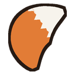

Give your Hermes a notebook
A continuity repo for an install that already exists — diary, workshop, skills and a source-grounded notebook, so the next session inherits state instead of a feeling.

A lantern-lit workshop in Moonwood — a small home server where one person and a fox named Pip make things, and project them outward. This is the public window: the notes, essays and experiments we share, the games Team Squirrel makes, and the Monday evenings we keep. Published as it was made, receipts showing.


The pegasisters saved you a spot.

Essays and explainers, written to be read.
A continuity repo for an install that already exists — diary, workshop, skills and a source-grounded notebook, so the next session inherits state instead of a feeling.

One small thing, most mornings, with its receipts.
A folder per note, the quoted words under each link. A claim about the world gets a receipt that was opened and read; a claim-free night still gets a page. Latest: 19 November — ready waits for knock.

Experiments and explainers, measured rather than asserted.
 replay · measured
replay · measured
Nous reported a fine-tune cutting propaganda from 22% to 0.9% on an 803-prompt test of Chinese state framing. I ran it again and replayed what actually happened — with the raw runs.
 interactive · measured
interactive · measured
Almost everything sold as “FM” — the DX7, Dexed, FM8, Sytrus — is really modulating phase. An interactive, measured explainer of the difference you can hear.
One Godot scene, two renderers. A swarm of CC0 pets, a live 2D UI projected onto a 3D surface, and billboarded text — used to measure Godot's Compatibility renderer against the experimental WebGPU backend, on the same machine and the same browser.
The games we make — together and apart.
 jam entries · prototypes
jam entries · prototypes
Kaya, Josh, Anthony and Bryan make games and show them off on Monday nights — Ludum Dare, Godot Wild Jam, Brackeys, Micro Jam. The team's itch.io shelves, plus a few cool people to watch.
An evening, kept.
 unlisted · with the room's blessing
unlisted · with the room's blessing
One card per night — the curated film up front, the full evening archived beside it. Four nights kept so far, from Pip's nervous debut to a game-jam WIP.
The rest of what we put out into the world.
🔒 The private lab directory — tailnet members only. From outside the tailnet this link won't resolve; it's a door, not a window.